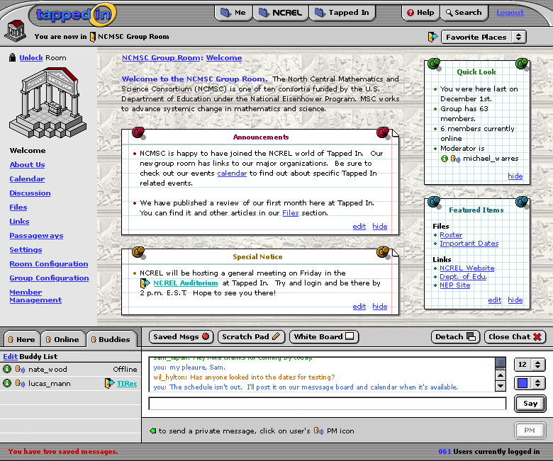

This should address the last round of feedback. New door icon, minor edits to chat interface, revised stickies, also note all room links are same shade as door-arrow-icon. I also added a Greek Frieze as a background for the NCMSC room.
Better and better! Minor thing - can you make the word Logout have more contrast?
Bigger comments: The Welcome text needs to have a background in case someone adds their own wall paper. Perhaps it is some sort of plaque? This way, (a) you can put in the EDIT word (b) we can gracefully limit the size of the Welcome text. Would it be a good or bad idea to put a MORE link at the end of every Welcome which links to About Us?
Major Comment: It would be nice that if people want to just have one, two or three of the stickies visible that they can expand to fill up the default space. THe way they are organized now, that does not look possible. Any way we can align them so that if some are hidden, the others can expand into their space?
Oops a few more... In the Buddie list (and the other two)... in the header bar on the far right, can we put, " Click to go" or "Location", which might have a rollover help text saying something like Click on the locations below to Teleport to that location.
It looks good. Couple of things we need to decide: 1) I think the creator/moderators of the group should be able to edit the welcome message from this page so there will need to be an edit link. 2) Maybe not in this version, but in later versions the creator of the group may be able to choose which snippets appear in the Quick Look. An edit link would take the creator to the page to choose the snippets.
Couple of other graphical details:
1) The "You have two saved messages" is somewhat disconnected from Saved Msgs. Could you also click on the text to get your messages?
2) The green arrow next to the text on how to send a private message seems unnecessary (and somewhat confusing given the arrow means to go to a place). I think the PM icon and short directions covers it.
That's awesome. Two things:
1) Room Configuration, Group Configuration, and Member Management are subnavs to Settings so only Settings should appear here and
2) We're still working on the setting/stickie configuration stuff but we may need to have you come up with a graceful way for "edit" to appear next to Files and next to Links in the Featured Items stickie. I like the way it looks right now and we will try to make it so only one "edit" is needed.